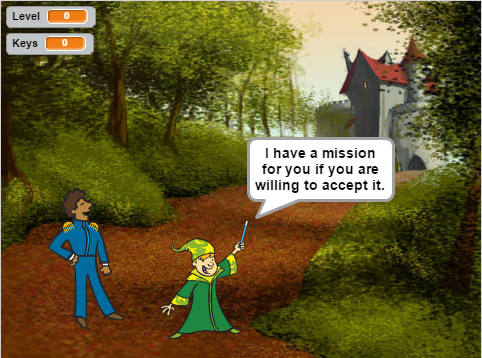

Final Scratch Project
For my final scratch project I decided to do a video game where the main character is saving other video game characters. The point of this game is to save the video game world. You start off with a video game guy who just found out that all the video game characters have been captured and he is the only one who can save them. You have to work your way through obstacles and different levels until the final battle where you will hopefully save all of the characters.
